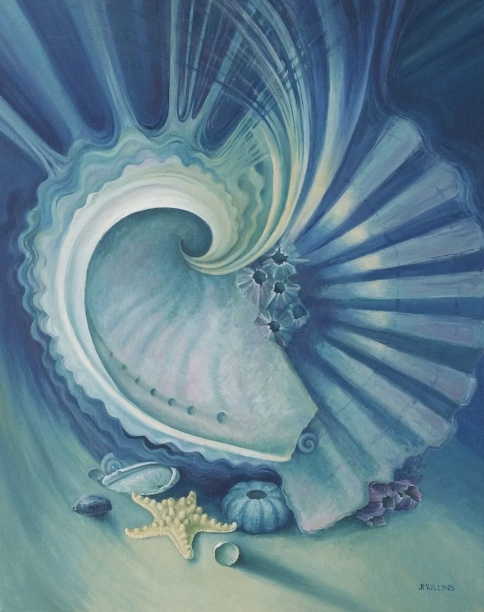

Select the picture to see it larger.
On a wall

Shown at its real size, 50 × 40 cm. Above a cabinet about 90 cm wide. The room is an illustration.
Composition: two shells
- Medium
- Oil on canvas board
- Size
- 50 × 40 cm
- Year
- 2018
- Price
- £680
- Catalogue no.
- 167
I am happy with this painting, as I like the way the two very different shells come together to form a whole while at the same time retaining their individual characteristics. The small shells balance the whole.
Ask about this paintingUK only. Collection from Nantwich is free; UK postage is quoted when you enquire. How buying works
 Against the sea wall
Against the sea wall Sea Urchins - Imaginative Composition
Sea Urchins - Imaginative Composition